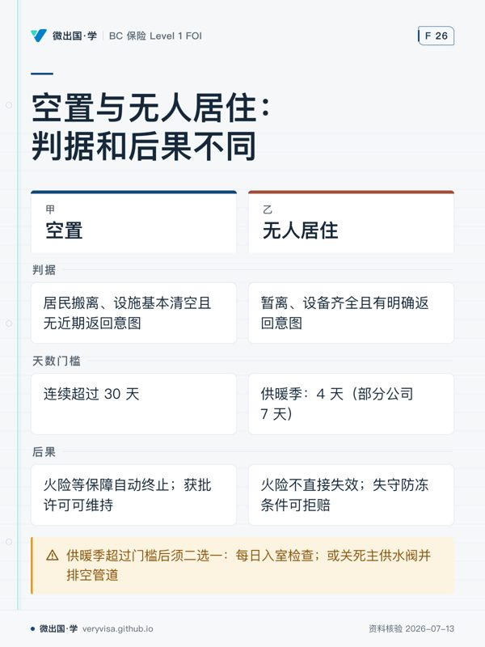

先用财产理赔与估值规则核对结论。个人住宅保单（Habitational Policies）是考试分值最重、实务咨询最频繁的基石板块，必须建立严谨的五步场景解剖思维。
一、温习目标与分析骨架
本章全面剖析个人及家庭住宅保险（Homeowners, Tenants, Condominiums）。面对纷繁复杂的场景题与客户索赔，切忌凭零碎经验猜测，必须严格套用“五层次问诊骨架”：
┌───────────────────────────────┐
│ 个人财产险五步问诊骨架 │
└───────────────┬───────────────┘
1. 人与地点 ──► 谁是被保险人？自住/出租/共管公寓？物业实际占用与空置状态？
2. 财产性质 ──► 损坏的是主建筑、附属建筑物、个人动产、还是租户装修改良？
3. 损失机制 ──► 水来自内部爆管、地下渗漏还是洪水？火灾原因？是否属于列明危险？
4. 条款限额 ──► Basic/Broad/Comprehensive？有何特别限额？是否有专项批单扩展？
5. 法律后果 ──► 触发额外生活费（ALE）？共管分摊（Assessment）？还是第三方责任？
本章重点掌握四大核心考点： 1. 三大居住形态保单拆解：屋主保单（Homeowners Package）、租客保单（Tenants Package）与共管物业分契业主保单（Condominium Unit Owner Package）的权利义务及承保空白填补。 2. 第一部分财产险四大基本项目：Coverage A（主建筑）、Coverage B（独立附属建筑）、Coverage C（个人动产）、Coverage D（额外生活费与租金损失）。 3. 第二部分个人责任险四大扩展：Coverage E（个人法律责任）、Coverage F（自愿医疗）、Coverage G（自愿财产损失）、Coverage H（住家雇员自愿补偿）。 4. 高频除外与边界痛点：水损的四大物理源头区分、动产分项特别限额（Special Limits）、空置（Vacancy）与无人居住（Unoccupancy）的法律界线。
二、底层机制：保障区块、保单形态与特殊水损
1. 第一部分：财产保障四大区块比例联动
在标准综合屋主保单（Homeowners Comprehensive Form）中，各保障项目的保额通常以主建筑保额（Coverage A）为基准按比例自动派生： - Coverage A：主建筑（Dwelling Building） 承保房屋主体结构、固定安装的装饰附属物、壁挂橱柜、室外固定设备，以及用于房屋维护维修的材料与建材。 - Coverage B：独立附属建筑物（Detached Private Structures） 承保与主建筑完全脱开物理连接的附属建筑（如独立车库、工具棚、凉亭、围栏、挡土墙等）。标准保单通常自动提供相当于 Coverage A 保额 10% 的额外保障。若独立车库价值高昂，需申请加保批单。 - Coverage C：个人动产（Personal Property） 承保被保险人及其家庭成员拥有或使用的日常生活动产。通常自动设定为 Coverage A 保额的 70% 至 80%。动产享有全球范围保障（Worldwide Coverage，通常在离开住处临时携带时仍受保）。 - Coverage D：额外生活费用与租金损失（Additional Living Expense & Fair Rental Value） 当房屋因承保危险损毁导致无法正常居住时，赔偿被保险人家庭为了维持原有生活水准而额外发生的合理生活支出（如临时租房租金、餐厅就餐额外差额、宠物寄养费等）。通常自动提供 Coverage A 保额的 20%。
2. 第二部分：个人综合责任险四大项目
- Coverage E：个人民事法律责任（Personal Liability） 承保被保险人作为私人身份在全世界范围内因过失造成第三方人身伤害（Bodily Injury）或财产损失（Property Damage）的法定赔偿责任。基准起步保额通常为 $1,000,000（实务中普遍建议提高至 $2,000,000 至 $5,000,000）。
- Coverage F：自愿医疗费用给付（Voluntary Medical Payments） 当客人在被保险人物业上意外受伤、或被保险人的日常活动导致他人轻微受伤时，保险人在限定额度内（通常每次事故 $1,000 至 $5,000）直接代付紧急医疗与急救费用。该保障不问被保险人是否有法律过失（No-Fault），旨在快速化解邻里矛盾。
- Coverage G：自愿财产损失赔偿（Voluntary Property Damage） 承保被保险人或其未成年子女无意损坏他人财产的善意赔偿。同样不问过失责任，专为解决未成年人（特别是 12 岁以下儿童，法律上缺乏侵权责任能力）损坏邻居玻璃或财物的道德补偿。根据，考试口径表内列出的历史起步基准为 $500，而正文与现代保单批单广泛提升为 $1,000，两者并非印刷错误，而是历史基准与现代增强版次的分流。
- Coverage H：住家雇员自愿工伤补偿（Voluntary Compensation for Residence Employees） 针对全职保姆、住家管家或清洁工在日常家政服务中遭遇工伤提供的自愿定期给付。
3. 三大住宅形态的结构性差异
- 屋主保单（Homeowners）：包含完整的 A + B + C + D 结构，享有建筑与动产的完全控制权。
- 租客保单（Tenants Package）：租客对房屋主体没有保险利益，因此绝对不含 Coverage A 与 Coverage B！仅承保 Coverage C（动产）、Coverage D（ALE）以及专属的租户装修改良工程（Tenant's Improvements and Betterments）。
- 分契公寓业主保单（Condominium Unit Owner Package）： 公寓大楼的主体建筑结构由物业法团（Strata Corporation / Condo Corporation）购买大楼总保单（Master Policy）。单元业主个人保单除 Coverage C 和 D 外，必须专门补充三大特有保障：
- 单元装修改良（Unit Improvements and Betterments）：如业主自行更换的实木地板、高级大理石台面；
- 损失分摊批单（Loss Assessment Endorsement）：当公共区域受损或大楼总保单保额不足、或大楼遭遇巨额责任索赔时，物业法团依法向各单元业主分摊集资的特别维修金；
- 单元额外保护（Unit Additional Protection）：在大楼总保单因故无效、失效或保障不足时代位赔付本单元的结构损失。
4. 水损四大物理机制与保单边界（实务核心痛点）
很多客户甚至初级经纪人经常将“家里被水淹了”一概而论。在现行加拿大财产保单中，水损按照来源与运动路径有着极其严苛的除外与批单界线： - 第一类：内部给排水管道突发爆裂（Burst Pipes / Accidental Discharge） 室内自来水管、供暖管、热水炉因突发物理破裂导致喷水。属于标准保单的默认承保范围。但必须满足防冻维护条件（在冬季供暖期若离家超过特定天数，必须确保供暖系统正常运行或排空水管并关闭入户总阀）。 - 第二类：下水道与化粪池倒灌（Sewer Backup） 市政下水道、雨水管网、化粪池污水逆流从地下室地漏或马桶反涌。在标准保单中属于明确的除外责任！必须通过付费购买 Sewer Backup Endorsement 才能获得保障。 - 第三类：地表水与陆上洪水（Overland Water / Freshwater Flooding） 暴雨积水、河流湖泊决堤、融雪融水直接从地面门窗或地库裂缝漫入室内。标准保单绝对除外！需购买专有的陆上水损批单（Overland Water Endorsement）。 - 第四类：地下水渗漏与毛细渗透（Groundwater Infiltration / Seepage） 地下水位上升、水经由地基墙壁裂缝缓慢长期渗入地下室。属于全行业绝对除外责任（Absolute Exclusion），无法通过常规个人保单批单附加承保。
三、实务口径与 2026 易错边界（R16 考试 vs 实务分流）
在考场应对试题与面对真客户日常咨询时，必须时刻保持两套口径的清醒分流：
1. 动产特别限额（Special Limits of Insurance）的双轨审查
保单声明页对于特定高价值、易被盗动产设有分项限额，必须严格区分两类限额的触发条件： - 全风险通用限额（Applies to All Perils）： - 现金与货币（Money, bullion, bank notes）：通常限额 $200 至 $500； - 证券与票据（Securities, tickets, deeds）：通常限额 $1,500 至 $2,000； - 在住处用于商务目的的动产（Business property on premises）：通常限额 $2,000 至 $5,000； - 离开住处临时携带的商务动产：通常限额仅 $1,000。 - 仅限盗窃触发的限额（Applies to Theft Only）： - 珠宝首饰、手表、高档皮草（Jewellery, watches, furs）：标准保单通常限定在 $1,000 至 $2,000 总额（单件常设 $500 上限）； - 纯银餐具与器皿（Silverware）：通常限定 $5,000 至 $10,000； - 自行车及配件（Bicycles）：通常限定 $500 至 $1,000。 - 实务与考试分流：如果客户家中的昂贵珠宝在火灾中被烧毁，盗窃特别限额根本不触发！在火灾全损下珠宝按普通个人动产全额赔偿；只有在遭遇盗窃入室被盗时，才严厉受到 $1,000 至 $2,000 的封顶限制。若客户拥有高价贵重物品，必须通过出具特约财产批单（Personal Articles Floater）单独估价投保。
2. 空置（Vacancy）与无人居住（Unoccupancy）的法律鸿沟
- 空置（Vacancy）：常住居民已全部搬离，且房屋内的主要家具、家电、生活设施基本清空，客观上不再具备日常正常居住条件，且缺乏近期返回居住的意图。
- 法律后果：空置连续超过 30 天（部分保单约定更短天数），保单的火险、恶意破坏（Vandalism）、玻璃破碎（Glass Breakage）及水损保障自动终止。若需维持保障，必须向保险公司申请并获批空置许可证（Vacancy Permit）并加缴保费。
- 无人居住（Unoccupancy）：住户虽暂时离开外出（如冬季外出度假 3 个月），但房屋内家具设备齐全，水电正常，具有明确返回生活的意图。
- 法律条件与供暖季水管防冻：无人居住并不直接导致火险失效，但在供暖季节受严格的“水管防冻防爆”条款约束。通常保单要求：在供暖季节离开住所连续超过 4 天（部分公司约定为 7 天），被保险人必须二选一：
- 安排胜任的成年人每日入室检查（Daily Inspection）以确保供暖设备正常运转；或者
- 将室内主供水入户阀门彻底关死，并将所有管道、马桶及水箱内的存水彻底排空（Drained）。 若被保险人未履行上述两项措施之一导致水管冻裂喷水，保险公司将依据保单除外条款完全拒赔。
四、开放式场景闭卷自测
请严格遵循“五步场景分析法”，合上参考资料独立解答以下 5 道深度场景案例：
-
五步法解剖地下室重大进水事故： 温哥华房主赵先生某天下班回家，惊恐地发现地下室积水深达 40 厘米，地毯、实木护墙板及高档家庭影院设备全被浸泡。在查阅保单和调取现场证据之前，请根据本章的“五层次问诊骨架”，列出作为专业经纪人在下达定损结论前必须按序调查核实的至少 6 项关键事实与法律问题。
-
特别限额的事故诱因辨析： 客户钱女士为其独立住宅购买了一份综合屋主保单（Homeowners Comprehensive），动产保额 Coverage C 为 30 万加元，保单对珠宝类的“盗窃特别限额（Special Limit for Theft）”载明为 $2,000。某日钱女士家中突发严重电气火灾，其珍藏在一楼卧室首饰盒内的一枚价值 25,000 加元的钻戒（持有正规评估报告）在火灾中被彻底熔毁烧失。保险公估人在初审报告中主张：“依据保单，珠宝最高只能赔偿 $2,000。”请指出该公估人的严重法律错误，并阐述钱女士应获得的正确赔付逻辑。
-
分契公寓（Condo）水损追偿与分摊责任： 孙先生拥有一套位于 18 层的分契公寓（Strata Condo），在自家厨房擅自聘请无牌水管工改动洗碗机水阀。次日水阀接口脱落爆裂，大量热水喷涌漫出，不仅淹坏了孙先生自家的地板，还导致楼下 17 层、16 层的两户单元天花板受损，并顺着公共电梯井倒灌造成整栋大楼公共电梯控制主板短路烧毁。大楼物业法团的大楼总保单免赔额（Deductible）高达 50,000 加元，物业法团遂通过决议，向孙先生全额追偿该 50,000 加元免赔额并要求赔偿所有公共区域损失。请问：孙先生个人购买的 Condo Unit Owner 保单中，哪几个具体保障项目将出面响应此次危机？
-
冬季空置度假与管道冻裂抗辩： 老李夫妇每年冬季都会前往夏威夷度假 4 个月。2025 年 1 月，温哥华遭遇极端寒流，气温骤降至零下 15 摄氏度。老李在出发前仅将室内恒温器调低至 10 度，未关闭主供水总阀，未排空管道，也未委托任何人进屋检查。在老李离开后的第 20 天，市政供电故障导致小区短暂停电 8 小时，暖气炉熄火停摆，室内暖气管道结冰胀裂。次日供电恢复后暖气重启，冰化为水喷涌成灾，造成 12 万加元惨重水损。保险公司以“违反供暖季离家防冻条款”为由断然拒赔。老李辩称：“停电是不可抗力，且我只走了 20 天，不属于空置（Vacancy）。”请全面评判双方的法律与合同争点。
-
未成年人侵权与自愿财产赔偿： 张先生 10 岁的儿子在邻居家院子里踢足球，不慎将足球踢入邻居阳光房，导致价值 $800 的特制进口艺术玻璃完全碎裂。邻居十分恼火并要求赔偿。张先生翻阅保单发现个人责任险免赔额为 $1,000，担心报案会留下责任索赔记录并导致未来保费暴涨。请你向张先生清晰解释其保单第二部分中的 Coverage G（自愿财产损失赔偿）机制，指出其赔付门槛、限额适用及对未来责任保费的影响。
五、参考答案与判分基准
1. 案例一判分基准（满分 10 分）
专业经纪人必须在下结论前依次调取核实以下 6 项核心事实（每项 1.5 分，综合逻辑 1 分）： 1. 水的物理源头与侵入路径：水究竟来自室内自来水管破裂、雨水地漏反涌、还是暴雨地表积水漫灌或地基渗水？ 2. 被保物业的具体保单类型：是 Homeowners、Tenants 还是 Condo？保单格式是 Basic、Broad 还是 Comprehensive？ 3. 附加批单的购买情况：保单是否特别加保了 Sewer Backup（下水道倒灌）或 Overland Water（地表水）批单？ 4. 房屋当期的占用状态：事故发生前房屋是否处于正常自住状态？近期是否存在长期无人居住且未巡查的情形？ 5. 受损财产的性质归属：受损标的中，哪些属于建筑结构（A），哪些属于装修改良，哪些属于动产（C）？ 6. 适用的免赔额（Deductible）与分项限额：是否存在水损特约免赔额？
2. 案例二判分基准（满分 10 分）
- 判定公估人主张错误：公估人生搬硬套限额，完全曲解了合同条款，钱女士有权主张全额赔付。（3分）
- 阐明特别限额的适用范围：保单明文规定，珠宝类的 \$2,000 限额属于“仅在遭遇盗窃（Theft Only）”时触发的特别限制条款。其精算法理是为了防止被保险人将极易藏匿转移的高价物品伪报入室盗窃。（3分）
- 火灾全损适用通常动产赔偿规则：火灾（Fire）是所有标准保单涵盖的核心列明危险。由于钻戒毁于确凿无误的火灾事故，其损失不受盗窃限额限制，只要钱女士能提供钻戒的真实购买发票、高清照片及专业估价报告证明其真实存在与价值，钻戒应作为普通个人动产（Coverage C），在其 30 万总保额内扣除通用免赔额后，按 25,000 加元足额赔付。（4分）
3. 案例三判分基准（满分 10 分）
孙先生个人的 Condo Unit Owner 保单将通过以下三个保障模块组合响应（共 10 分）： - Coverage E：个人法律责任险（Personal Liability）：由于漏水是因孙先生私自违章改动水管过失引发，楼下 17 层、16 层邻居因水浸遭受的财产损失索赔，属于孙先生过失造成的第三方财产损失，由 Coverage E 介入调查并代为赔偿。（4分） - Loss Assessment Endorsement（物业损失分摊批单）：大楼物业法团依据卑诗省《分契物业法》（Strata Property Act）向孙先生个人摊派的大楼公共电梯损坏自付额 50,000 加元，在孙先生购买了充分的分摊批单限额下，可由该批单在扣除个人免赔额后代为赔偿。（3分） - Coverage C 与装修改良条款（Unit Improvements and Betterments）：孙先生自家被泡坏的厨房复合地板，属于其自行出资铺设的单元改良工程，可由个人保单的装修改良项目进行修复理赔。（3分）
4. 案例四判分基准（满分 10 分）
- 厘清空置与无人居住争点：老李的房屋家具齐全且打算返回，在法律上确属“无人居住（Unoccupancy）”而非“空置（Vacancy）”，保险公司以空置抗辩不能成立。（3分）
- 判定老李实质违约导致拒赔合法：保单关于“供暖季离家”的特别防冻条款具有独立于空置的法定效力。老李离家 20 天（远超 4 天安全阈值），既未排空管道断水，又未委托专人每日入室检查，属于客观上的合同前置条件违约。（4分）
- 驳回停电不可抗力抗辩：防冻条款的立法目的正是为了防范严寒天气下任何原因（包括短暂停电或暖气机机械故障）导致的气温骤降。老李的不作为是造成巨大水损的决定性近因（Proximate Cause），保险人拒赔完全具备合同法与现行法依据。（3分）
5. 案例五判分基准（满分 10 分）
- Coverage G 的免过失赔付特征：向张先生指出，Coverage G 属于“自愿财产损失赔偿”，其设立初衷就是由保险人自愿代偿被保险人或其 12 岁以下未成年子女善意造成的他人物品损毁，完全无需证明被保险人在法律上是否存在过失。（3分）
- 零免赔额优势（No Deductible）：Coverage G 通常不扣除任何免赔额，张先生无需承担那 \$1,000 的责任险免赔额，邻居碎裂的 \$800 艺术玻璃可获全额赔偿。（3分）
- 限额适用与金额分流：根据保单版次，现代住宅保单的 Coverage G 限额通常为 $1,000（旧版为 $500），本案 \$800 损失完全在该限额之内。（2分）
- 隔离保费影响：Coverage G 属于善意无过失小额补偿，不属于有责侵权索赔，不会被记入被保险人的民事过失索赔档案，消除了张先生关于次年保费暴涨的后顾之忧。（2分）
六、错题复盘与追问清单
在完成个人财产保单深度测试后，对照下表强化定损反应速度：
| 场景难点 | 常见误判路径 | 正确专业判断准绳 | 复盘自查追问 |
|---|---|---|---|
| 水损成因定损 | 只要客户说地下室进水，就认为保单都能赔。 | 严密区分四类水损源头：自来水管道爆裂保，地下室倒灌与洪水需批单，地基渗水绝对除外。 | “水究竟是从水管出来的、下水道反涌上来的、还是地表漫进来的？” |
| 动产特别限额 | 误以为高价珠宝在火灾中也只能按 \$2,000 封顶赔。 | 牢记 盗窃特别限额只管盗窃（Theft Only），火灾全损按普通动产全额定损。 | “导致该损失的直接 Peril 是什么？该特别限额是全险种适用还是仅限盗窃？” |
| 供暖季离家条款 | 以为只要家里留着家具就算无人居住，水管爆裂就必赔。 | 离家超期必须满足：胜任人员每日入室巡查 OR 关闭总水阀排空管道。 | “客户在供暖季离家几天？是否采取了关闭水源或每日检查的法定措施？” |
| 自愿赔偿 Coverage G | 以为孩子打碎玻璃必须走复杂过失诉讼并扣大额免赔额。 | Coverage G 不问过失、免免赔额，专门平息邻里小额纠纷（限额 \$500–\$1,000）。 | “是否属于未成年人家属引起的轻微小额损坏？能否适用自愿财产险？” |
本页知识卡
不看正文也能拿到这一节的核心内容：先看导读，再看图。点图放大，左右翻页。
- 先看先读右栏，再回看左侧数值。
- 易漏同类贵重物并不一定按同一规则处理。
- 下一步处理索赔时先定事故成因，再查该项封顶方式。

- 先看先看居住事实，再判断属于哪一类。
- 易漏容易混的是暂离和彻底搬走的差别。
- 下一步确定类别后，再核对应承担的保全动作。